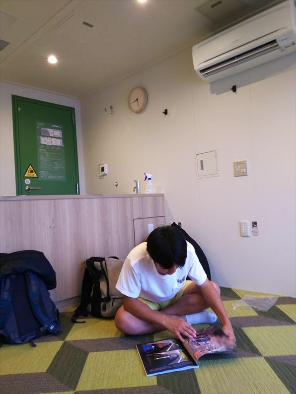

湖西線や草津線のラストは公表されず、関西で最後に乗ることが出来なかったので、今回は岡山まで乗りに行きましたよ！
もちろん、「マニアの息子の付き添い」のていです。
普通に岡山まで行っても面白くないので、変わった
経路で向かいます。
ジャンボフェリーの新造船の「あおい」
じゃじゃ〜ん！なんと今回は夢のバルコニー付の個
室を奮発しました！
ここ、金払っても一人では乗れないので、このチャ
ンスを逃す手はないです。

他にバルコニー付となると、クルーズ船や九州航路
の特等室とかになるので、むちゃ高いんす。
この部屋、追加料金は８０００円で６人まで使える
ので、大人数だとむちゃくちゃお得です。
天気予報は雨でしたが、なんとか天気はもってます。
バルコニーで過ごすのは気持ちいいのですが、ちと
寒いですね。
昼は船内でうどんをいただきました。茶色い具はさ
つま揚げではなく、小豆島名物のおかきみたいな米
菓です。意外とあってました。
いつもは琴電の屋島線の駅まで歩いていきますが、
今日は時間がないので無料送迎バスで高松駅まで。
宇多津から特急で岡山へ。なんと贅沢な！
息子が８０００系に乗りたいからわざわざしおかぜ
に乗ったのに、大雨の影響で今治以西が不通で車両
運用がガタガタ。
本来、８０００系が来るはずが、ちゃう形式やんけ！
（もちろんキレてないっすよ）
時間があったので、児島で降りて、１本あとのしお
かぜに望みを託したけど、結局新型しか来えへん！
どうせまだまだ走るがなと思うんやけど、マニアと
しては改造前の状態で乗りたいっちゅうことみたい。
ほんま、マニアの考えることはよーわからん・・・
さて、岡山に到着し、いよいよ本命登場です！
糸崎行の普通です。
と思いきや、こちらも残り２編成しかないという湘
南色がやってきました。
こちらが本命。
撮り鉄もまぁまぁおりました。
貴重な並び。
うれしがって車内の様子も撮ってしまいました。
たまに先頭にかぶりついたりして、走りを堪能させ
てもらいました。
息子は糸崎まで乗り通しましたが、私は十分堪能し
たので尾道で下車します。
今残ってるのは最後のほうに増備された編成なので、
窓はシンプルな作りで、１１７系っぽくないですね。
夕食ゲットせなあかん。
糸崎で折り返してきた岡山行が戻ってきました。
岡山行きはかなりすいてて、無事息子とも合流できました。
無事、岡山駅に到着。
撮り鉄以外の一般の人もけっこうカメラ向けてまし
た。
岡山からは、残るもう１編成が播州赤穂行となって
います。乗り継ぎばっちりです。
乗って来た編成が一旦引き上げ線に引き上げたのちに戻ってきて、
これは赤穂行と並ぶのでは！と思いましたがそうは問屋がおろしま
せんでした。残念。
東に行くにつれ、車内も空いてきました。

播州赤穂に到着。
とうとうこれで１１７系ともお別れか・・・